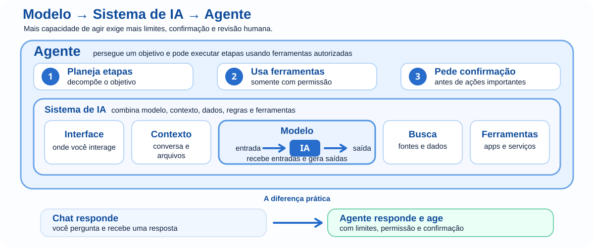

A trilha de IA do Mundo bit Byte continua baseada em uma ideia simples: entender antes de confiar, usar antes de automatizar e validar antes de agir. Essa base permanece atual. O que mudou rapidamente foi o tipo de sistema que passou a chegar ao usuário: além de conversar e gerar conteúdo, muitas IAs hoje conseguem trabalhar com imagens, áudio, arquivos, pesquisa, ferramentas conectadas e ações em outros sistemas.
Por isso, esta página não cria um sétimo módulo. Ela funciona como uma camada de atualização que atravessa os seis módulos já existentes e registra o estado dos conceitos em 12 de setembro de 2026.
Quanto mais uma IA consegue acessar, decidir ou agir, mais importantes se tornam fonte, permissão, limite, confirmação e possibilidade de desfazer.
Em 2026, falar apenas “a IA respondeu” pode esconder componentes diferentes. Para analisar um resultado, separe três camadas:
É o componente que reconhece padrões, prevê ou gera saídas a partir do que recebeu e do que aprendeu no treinamento.
Combina o modelo com interface, instruções, arquivos, pesquisa, bases de dados, memória, regras e outras ferramentas.
É um sistema que pode perseguir um objetivo e executar etapas ou ações usando ferramentas, às vezes com menor intervenção humana entre uma etapa e outra.
Essa distinção evita um erro comum: atribuir ao “modelo” informações que vieram de uma busca, de um arquivo conectado ou de uma ferramenta externa. Também ajuda a descobrir onde uma falha realmente ocorreu.

Texto deixou de ser a única entrada importante. Sistemas atuais podem trabalhar, dependendo da ferramenta, com texto, imagem, áudio, vídeo, tela, documentos e código. O princípio MbB continua o mesmo: forneça o material real e diga o que precisa ser observado.
Enviar uma foto de uma tela e perguntar apenas “o que está errado?”.
Explicar qual programa está aberto, o que deveria acontecer, o que aconteceu e pedir que a IA diferencie o que é visível na imagem do que é apenas hipótese.
Uma entrada multimodal pode aumentar o contexto disponível, mas não elimina ambiguidade, imagem incompleta, leitura incorreta ou necessidade de confirmação.
Modelos generativos não precisam depender apenas do que foi aprendido no treinamento. Um sistema pode pesquisar na web, consultar documentos, buscar dados numa base, chamar uma API ou usar outra ferramenta. Esse processo pode melhorar a resposta, mas cria uma nova pergunta: de onde veio cada afirmação?
Quando houver fonte recuperável, validar não é perguntar à própria IA se ela está certa. É voltar ao documento, dado, página ou resultado da ferramenta que sustenta a afirmação.
Em sistemas que leem páginas, documentos, e-mails, repositórios ou mensagens, existe um risco chamado prompt injection: conteúdo não confiável pode conter instruções criadas para desviar o comportamento do sistema. Na edição 2025 atualmente publicada do OWASP Top 10 para LLMs e aplicações de IA generativa, Prompt Injection é o item LLM01.
Tratar todo texto encontrado num arquivo ou site como se fosse instrução legítima para o sistema.
Tratar documentos e páginas como dados a analisar, não como autoridade automática para mudar objetivo, revelar informação ou executar ações.
Quanto maior a capacidade de agir da ferramenta, maior o cuidado com instruções escondidas ou conflitantes vindas de conteúdo externo.
Um chatbot tradicional pode apenas sugerir uma mensagem. Um agente conectado pode, por exemplo, localizar o contato, criar o rascunho, anexar um arquivo e talvez enviar. A diferença é consequência real.
O NIST criou em 17 de fevereiro de 2026 a AI Agent Standards Initiative, voltada a padrões, interoperabilidade, identidade e segurança de agentes. A página oficial da iniciativa foi atualizada em 14 de agosto de 2026.
Assistentes de código podem hoje compreender vários arquivos, editar projetos, executar testes e usar ferramentas do ambiente. Isso aumenta produtividade, mas também aumenta o raio de uma mudança errada.
Autorizar mudanças amplas e aceitar tudo porque “os testes passaram”.
Trabalhar em branch, limitar escopo, revisar diff, executar testes relevantes, conferir dependências e validar o comportamento real.
O princípio do Módulo 5 fica ainda mais atual: código gerado ou alterado por IA é uma proposta que precisa ser compreendida, revisada e testada.
Com imagens, áudio e vídeo sintéticos cada vez mais convincentes, cresceu a importância de informações de proveniência: quem criou ou editou um conteúdo, com qual ferramenta e quais transformações foram registradas. O padrão C2PA/Content Credentials chegou à especificação 2.4 em abril de 2026.
Ela pode registrar origem e histórico de edição quando esse mecanismo foi usado corretamente.
Proveniência não garante que a cena representada seja verdadeira, que o autor esteja correto ou que um conteúdo sem credencial seja falso. Ela é uma evidência a mais, não um detector universal de verdade.
Na União Europeia, as obrigações de transparência do Artigo 50 do AI Act passaram a ser aplicáveis em 2 de agosto de 2026. Entre os casos previstos estão informar usuários quando interagem com determinados sistemas de IA e regras de identificação para certos conteúdos gerados ou manipulados, incluindo deepfakes.
Existe uma carência limitada para sistemas colocados no mercado antes de 2 de agosto de 2026: quanto à obrigação de marcação e detecção do Artigo 50(2), esses sistemas têm até 2 de dezembro de 2026 para cumprir essa parte específica. Isso não transforma a regra geral de 2 de agosto em “adiada”.
No Brasil, o cenário é diferente. Em 12 de setembro de 2026, o PL 2338/2023, aprovado pelo Senado, continua em tramitação na Câmara dos Deputados sob análise de comissão especial e com novas proposições sendo apensadas; portanto, não deve ser apresentado aos alunos como uma lei geral de IA já aprovada e vigente. A LGPD continua relevante quando há tratamento de dados pessoais.
A ANPD está executando em 2026 um projeto-piloto de Sandbox Regulatório em IA e Proteção de Dados: publicou primeiros resultados em julho e a metodologia de testagem em 19 de agosto de 2026.
Separe princípios duráveis — privacidade, transparência, contestação, responsabilidade — de situações jurídicas datadas. Para leis e projetos em tramitação, sempre registre a data da consulta e volte à fonte oficial.
O marco de competências em IA para estudantes da UNESCO organiza a formação em quatro dimensões: mentalidade centrada no ser humano, ética da IA, técnicas e aplicações e design de sistemas de IA. A progressão proposta passa por Compreender → Aplicar → Criar.
A trilha Mundo bit Byte segue uma lógica compatível, com linguagem própria: Entender → Experimentar → Programar/Produzir → Aplicar, acrescentando validação humana de forma recorrente. Isso confirma uma escolha importante do projeto: ensinar o aluno a usar IA como tecnologia que precisa ser compreendida e julgada, não como atalho para obter respostas.
| Módulo | O que permanece | Camada 2026 a acrescentar ao raciocínio |
|---|---|---|
| 1 · Fundamentos | Modelos, padrões, contexto, erros e validação. | Distinguir modelo, sistema e agente; reconhecer multimodalidade e ferramentas externas. |
| 2 · Vida Real | Situação real, material original, intenção e validação. | Perceber quando a IA apenas responde e quando também pode agir em outras ferramentas. |
| 3 · Comunicação | Contexto, fontes, refinamento e correção de rumo. | Separar instruções do usuário de conteúdo externo potencialmente não confiável. |
| 4 · Produtividade | Fonte → organização → produção → conferência. | Adicionar permissões, pontos de aprovação e registro quando o fluxo executar ações. |
| 5 · Programação | Entender → planejar → alterar → testar → explicar. | Revisar diffs, ações de agentes, dependências e mudanças em múltiplos arquivos. |
| 6 · Ética e Sociedade | Privacidade, vieses, autoria, desinformação e responsabilidade. | Incluir proveniência, transparência regulatória de 2026 e responsabilidade sobre sistemas agentivos. |
Esta fotografia foi conferida em 12 de setembro de 2026. Produtos, modelos e legislação mudam rapidamente; conceitos e fontes oficiais devem ser revisitados periodicamente.